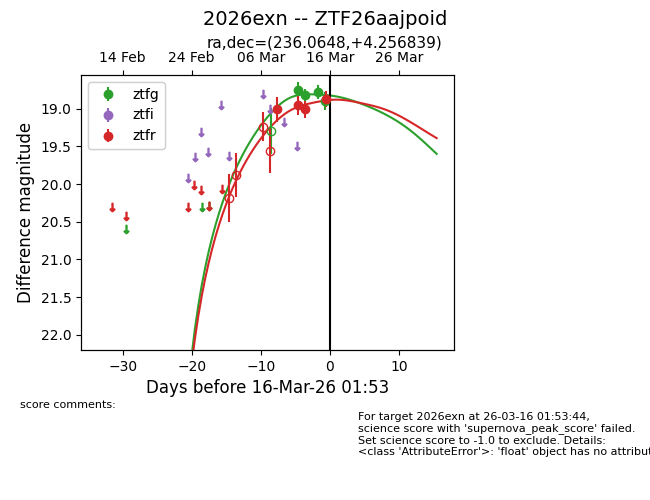
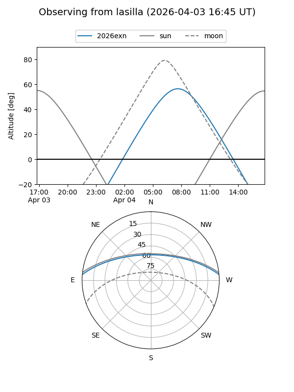
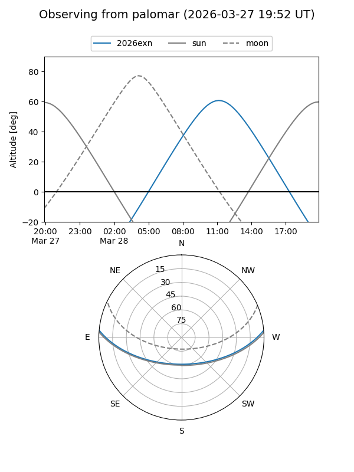
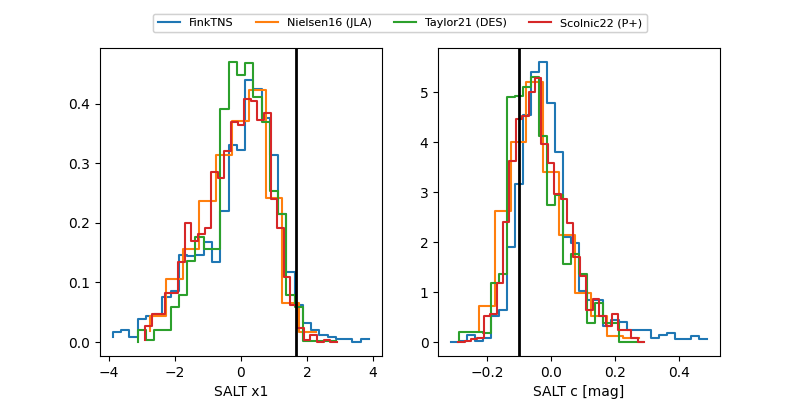

2026exn
Target 2026exn at 2026-03-16 01:56
Aliases and brokers:
FINK: link
Lasair: link
ALeRCE: link
TNS: link
YSE: link
alt names
ZTF26aajpoid (ztf,fink_ztf)
2026exn (tns,yse)
Coordinates:
equatorial (ra, dec) = 236.0648,+4.25684
equatorial (HMS+DMS) = 15:44:15.56,+04:15:24.62
galactic (l, b) = (11.6898,+42.90411)
Flags:
Photometry:
last ztfg=18.89, ztfr=18.87
4 ztfg, 4 ztfr detections
Lightcurve

Visibility


Additional plots
